On October 7 the BPER FORUM Monzani in Modena hosted the Particleworks Experience. Eight talks asked three questions: where does the heat go, where does the air go, and where does the material wear? Six have recordings; IAV and Univance released their slides only.
The speakers came from a bearing maker, a pump manufacturer, a hydropower research project and several engineering firms. Each put the simulation next to a thermocouple, an optical sensor or a worn prototype, and stated the gap. Where a talk has a recording, the links under it play the recording at that second in a floating player. The full slides are on the proceedings page.
Closing the thermal model
Two talks closed a thermal model with the same trick: oil and metal never run on the same clock. The oil is simulated briefly, its heat-transfer map goes into a steady solution of the solids, and the result is compared with measurements. The SKF talk, in between, tests the heat-transfer coefficient such models rely on.
CHT Analysis of a Reciprocating Pump
An industrial pump bathed in oil, no thermal data on its contacts, and a model that counts as finished only when the oil neither gains nor loses heat.
Volumetric pumps for food, chemical and waste-water plants run all day at a fixed operating point. What goes wrong first is thermal: seals degrade, components overheat. Inside the pump the oil is the only link between hot and cold parts, and every watt finally leaves through natural convection. R&D CFD, with its customer Comet, wanted a thermal model of the real operating point and a method it can reuse on the next pump.
A fully coupled unsteady run was ruled out: it needs double precision, and sloshing lives in seconds while heat lives in hours, so the run would be far too long. The problem was cut in two. A few seconds of Particleworks sloshing give the heat-transfer map; a steady conjugate-heat-transfer (CHT) solution then converges in minutes.
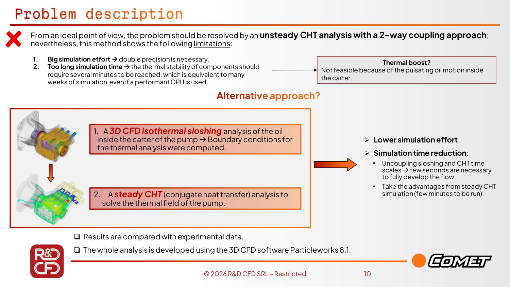
Do not guess where the heat is born
Loads on the contacts were not available. Trial and error was rejected as stochastic and unvalidated; a dynamic analysis of the pump with friction coefficients from the literature gave a power split instead, with far fewer free variables. The largest share sits on the piston–block pair, the contact that is also critical in the test.
Two independent checks, not one
First the thermocouples, compared one to one at the test positions. Then the oil: it is a heat carrier, not a heat sink, so the heat taken from the shaft must equal the heat given to the housing. If either fails, the power, the oil temperature or the ambient HTC is scaled and the loop restarts.
The model shows where the seals suffer
All thermocouples align; the worst, the open-side bearing, is off by about 5–6 °C and points to a local particle refinement as the next step. The shaft sits at 70–80 °C as in the test, and a hot spot at the piston–seal contact shows up where seals degrade abnormally in service.
Cheap enough to do by hand
Three to five iterations were enough, and a steady CHT takes minutes on a GPU. Once the model exists, a case takes about an hour and a half.
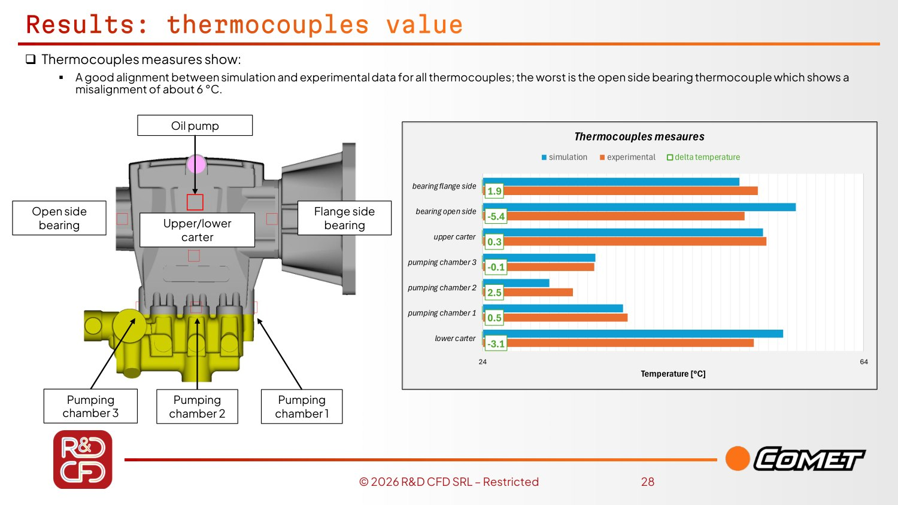
The oil balance is checked on a uniform surface mesh built from the HTC map. Heat enters the oil from the shaft and leaves it into the housing; the two flows must be equal, so the balance closes to 0 W.
In short
- Sloshing and heat are decoupled: seconds of oil, minutes of steady CHT.
- The oil balance at zero is the check that does not depend on the thermocouples.
- About 1.5 h per case once the model exists; automation with Python is the natural next step.
Integrating Particleworks into SKF Engineering Tools: Part I
Before trusting a heat-transfer coefficient inside a bearing tool, SKF tested it on the simplest cases that exist, and found that the answer depends on where you read it.
SKF frames the problem with one number: about 20 % of the world’s energy is lost to friction. Bearings fight friction, but even a good bearing is a source of heat, and temperature then shapes everything: the lubricant film, thermal expansion and the extra load it brings, and life, because every degree more shortens the life of the lubricant and of the bearing.
Thermal analysis is a ladder, from lumped networks that answer in real time, through finite elements with HTCs from analytical formulas, to CFD coupled one way and finally two ways, where answers take days or weeks. SKF’s next rung is one-way: its in-house bearing tool BEAST provides dynamics and heat sources, Particleworks provides the HTC maps. Part I of the study is the verification of those HTCs. Rolling bearings cannot be measured easily, so the references are classic cases: a sphere in a cross-flow, and two concentric cylinders.
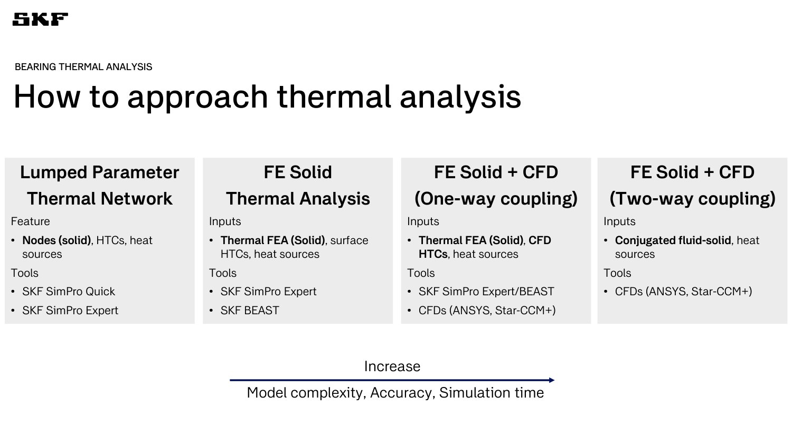
One sphere, many answers
The reference is the Whitaker correlation: 184 W/m²K. Particleworks’ local-correlation method reads the velocity of particles next to the wall, which tends to zero there, so it reports a low HTC: 66 at the wall, 169 when sampled 1.5 mm away. With coarser particles the default is 85, and raising the Nusselt coefficient lifts it to 192.
The heat-flux method converges, at a price
Solving the temperature field and reading the heat flux does not care about mapping distance, and improves with refinement (75 → 127 W/m²K from 0.5 to 0.25 mm, against 180 for Ansys Fluent). But a thermal particle is heavier than a flow-only one, so further refinement was too expensive. Local refinement was disappointing, and is improved in the new release.
Concentric cylinders: defaults were enough
Heat transfer here is governed by the vortex pattern, and published correlations each hold only in a parameter range. The vortices appeared with mostly default settings (watch the Courant limiter). Across four radius-ratio and speed cases Particleworks sits between −7 % and +28 % of the correlation, a spread comparable with Fluent (−8 % to +17 %).
A lucky trial in the field
On a confidential customer case, a large oil system with spherical thrust bearings, SKF simply imported the power loss from its bearing software as a heat source and let Particleworks run. The temperature map was something the customer could relate to.
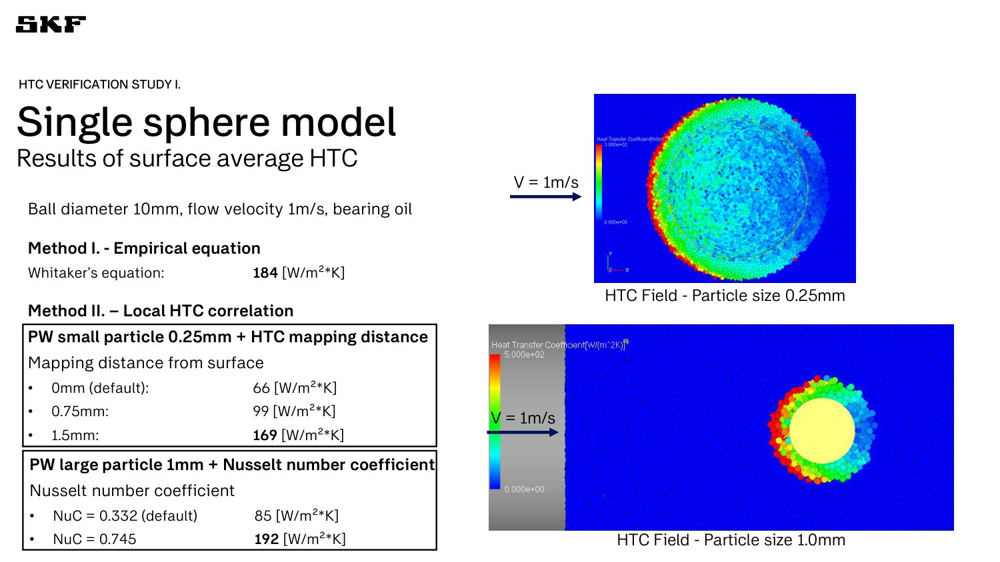
In short
- Be conscious of what drives a discrepancy: mapping distance, Nusselt coefficient and refinement each moved the sphere HTC by a factor of two or more.
- Next: a segmented bearing, ideally with a cyclic boundary condition (requested), then a full bearing with multi-layer refinement.
- The correlation is a reference, not the truth.
Study of the Lubrication on Carrier Roller using a CFD 3D-MPS Method
A sealed, partly filled oil bath heats itself as it turns. TrackOne maps its temperatures in about a day per case, and a bench test shows where the model can be trusted.
The carrier roller holds up the track chain of an excavator. The chain forces the shell to rotate around a fixed shaft; seals, bushings and a partial oil fill keep metal from touching metal. Under load, the friction creates internal thermal peaks, and spikes that are not controlled lead to component failure. The goal was a steady-state temperature map for a given operating case.
Because the oil only partly fills the roller, it is thrown and fragmented against the walls as the shell turns. That, and the narrow passages in cover, bushing and shaft, is why TrackOne, with the Enzo Ferrari engineering department of Unimore, chose a meshless method.
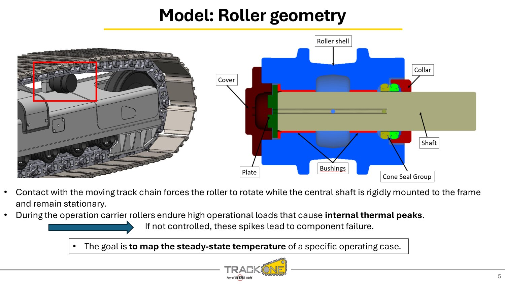
Fluid and solid do not share a clock
The oil reaches its pattern in milliseconds, the metal in hours, so a straight unsteady CHT is prohibitive. The answer is an iterative steady CHT with two phases: the oil alone produces average HTC and near-wall temperature maps (a few hours), then the solids alone are solved with those maps (a few minutes). The loop stops when the solid field no longer changes, after three to four iterations.
A moving contact, rewritten for a steady model
The chain touches only the top of the roller shell. A steady run with that contact alone would give an unrealistic, unbalanced temperature map. TrackOne spreads the cooling over the whole circumference and corrects it with a scale factor τ (footprint area over contact area) and an equivalent thermal contact resistance.
Case 1 within about 12 %, case 2 below 7 %
On the bench, with sensors outside and a probe in the oil, case 1 shows good convergence with a slight underestimation of the roller shell and the oil (errors up to about 12 %). Case 2, at higher speed and lower load, is excellent: all errors below 7 %. About one day per case.
What is not resolved
In the Q&A the numerics were questioned: the smallest gap, between shaft and bushing, is not resolved with particles. Next steps: oil rheology evolution, coupling with a FEM solver for deformation, and critical operating conditions.
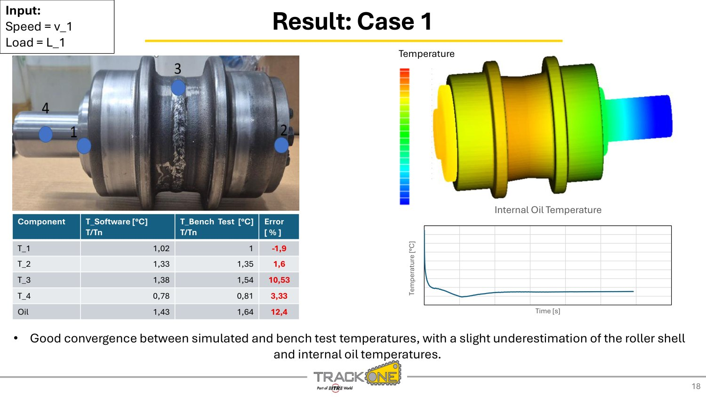
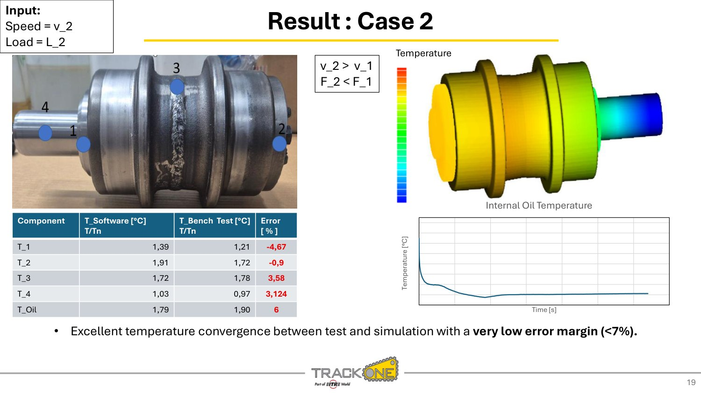
Two closures keep the steady model realistic. The chain loads only the top of the shell, so the cooling is spread over the whole circumference and corrected with a scale factor. Air convection on exposed components follows an analytical law in the component velocity v, and oil viscosity follows an Arrhenius–Vogel law in temperature.
In short
- Phase 1 (oil, hours) and phase 2 (solids, minutes) alternate until the solid field is stable.
- Errors are reported component by component: up to about 12 % in case 1, below 7 % in case 2.
- Next: rheology evolution, FEM coupling, critical conditions.
Measure it, trace it, see what it does
Aeration changes viscosity, density, film thickness and oxidation rate. Three talks looked at air from three sides: how to get a measured number before asking the model to predict it, where the air starts in a real drivetrain, and how the airflow itself shapes the oil.
Direct Optical Air-in-Oil Measurement as an Enabler for Accurate Simulation of Gearings and Hydraulic Systems
Two oils with the same air content can behave very differently. Calibrate the aeration model on bubbles, not on a percentage.
Air in oil is a multi-scale problem: root causes and effects sit in different places and develop over time. A gas phase changes the density and viscosity of the oil, so efficiency drops; it brings cavitation and NVH problems; it exposes the oil to thermal and chemical stress, with oxidation in the long run; and it makes the lubricant film unreliable where the gear needs it. Particleworks has an aeration module that predicts generation, transport, coalescence and disappearance of bubbles.
What was available until now was a single number, the air content. deepfluid’s optical sensors, in the laboratory, on the test bench and in the field, take snapshots of every bubble and give the bubble count, the size distribution, the mean diameter and the oil–air contact surface, with the snapshot as evidence.
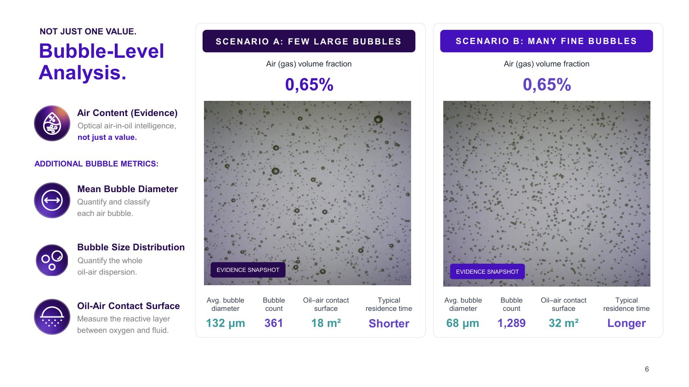
One air content, two bubble populations
In scenario A, 361 bubbles of 132 µm offer 18 m² of oil–air surface. In scenario B, 1,289 bubbles of 68 µm offer 32 m² for the same volume of air. The surface is where oxidation happens, so oil aging, cavitation and compressibility differ although the percentage is identical.
Measure, calibrate, then simulate
The aeration model has many coefficients, and two things are calibrated: the total amount of air generated and the bubble-size distribution. Simulation then gives the global picture (flow paths, recirculation, aeration hot spots) while the sensor measures what is happening at one point: a measurement does not replace the simulation.
A differential gear, before and after
In a differential gear in a pool of oil, the default coefficients gave 0.12 % air with 800 µm bubbles. After calibration on the measurement: 0.45 % against 0.43 % measured, and 186 µm bubbles against 180 µm. The bubble motion and the recirculation under the gear are visibly better captured.
How far does a calibration travel?
Geometry: no problem. Speed: coefficients scale with the velocity ratio from a calibrated reference. Additive package: no, because Particleworks does not solve chemistry; a new additive or anti-foam means a new calibration. Temperature: an open point, and the trend can even change sign from oil to oil.
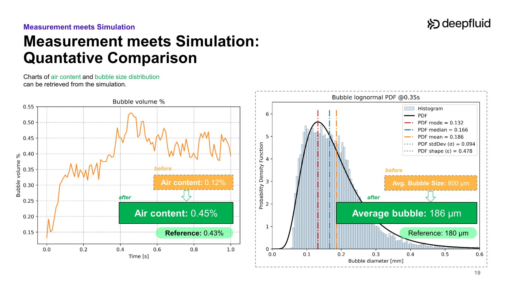
In short
- Calibrate two things: total air generated and bubble-size distribution.
- Scale with speed from a reference; recalibrate for a new additive package; temperature scaling is open.
- The sensor complements the simulation: a local measurement against a global view.
Air Bubble Dynamics in the Gear Oil of an Electric 3-Speed Drivetrain
In the gear oil of a real e-drivetrain, more than half of the air in the target box started at one wall, behind one shaft. An oil guide there cut the air in the box by 62 %.
Air in the gear oil of an electric drivetrain changes lubrication, efficiency and durability. IAV, an engineering partner for powertrain systems, uses Particleworks for the oil level, the oil paths and flow rates, oil velocities, bearing lubrication, indications for heat-transfer coefficients, churning losses and air inclusion.
The case was IAV's 3-speed electric commercial-vehicle powertrain, with a maximum input torque of 1,500 Nm. The model has 33 relevant model groups that mirror the transmission assembly, and it aims at the oil behavior and the air content in the suction area of the pump. A 1D thermal model and a 1D hydraulic model supply the inflows, six at the oil gallery for gear lubrication and one at the second intermediate shaft, and the pump is the outflow.
In the coupled MPS/DEM run with Particleworks and Granuleworks, air is a set of DEM particles. Reading thousands of short-lived particles is the hard part, so IAV built a tool for it, the IAV Particle Explorer.
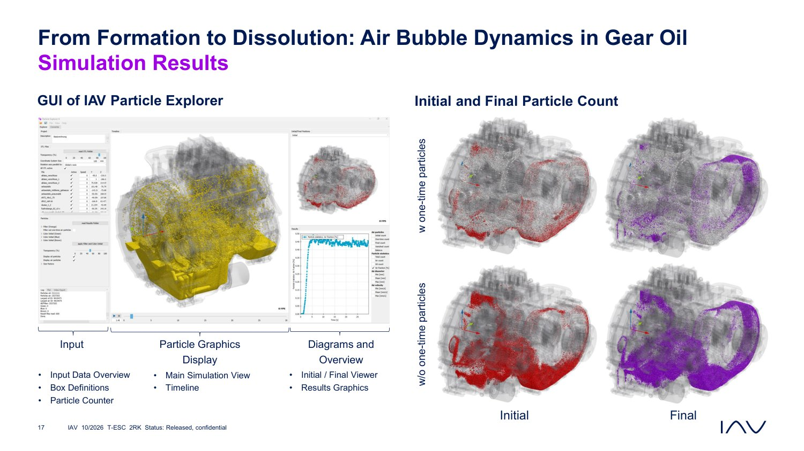
Filter the noise first
Some air particles exist for only a very short time. Counting them would mislead, so the Particle Explorer detects these one-time particles and shows the initial and final counts with and without them.
Give every air particle a source
The tool traces particles back to the area where they started and counts them per area; DEM and MPS particles can both be assigned to a source. A target box and a set of source boxes turn a cloud of particles into numbers, here for the first 25 s of simulated time.
One wall behind one shaft
With three source boxes, the target box held 83,187 air particles. 46,704 of them started at the backside wall behind the intermediate shaft (blue box), 2,370 at the backside wall behind the input shaft (brown) and 2,152 inside the covered final drive (green). More than half of the air came from one source; the rest started elsewhere.
A small measure, and its count
An oil guide for the lower intermediate shaft, meant to reduce oil splash and with it the air taken into the oil, brought the target box down to 31,781 air particles, 62 % fewer. The blue source fell to 0, the green to 275 and the brown to 214.
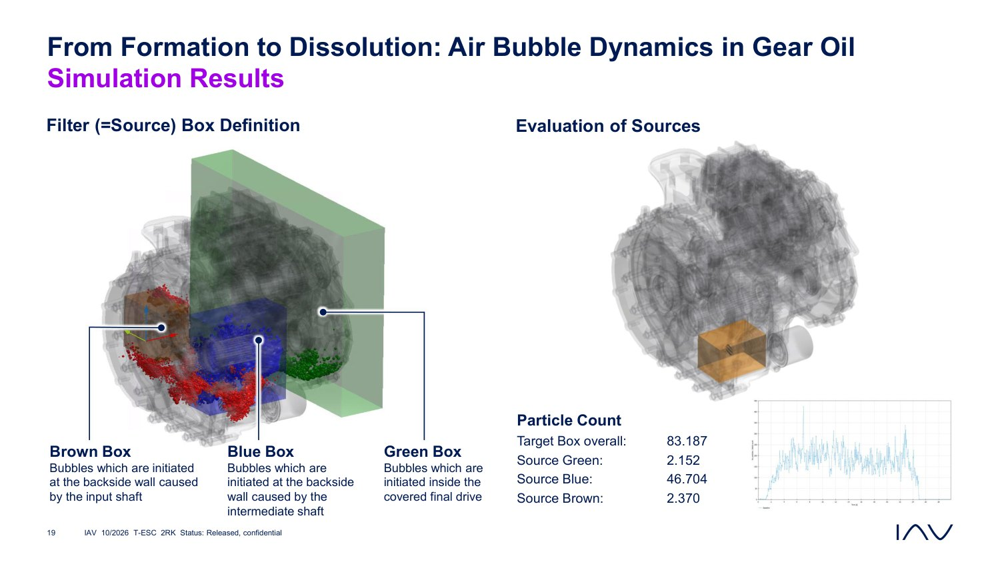
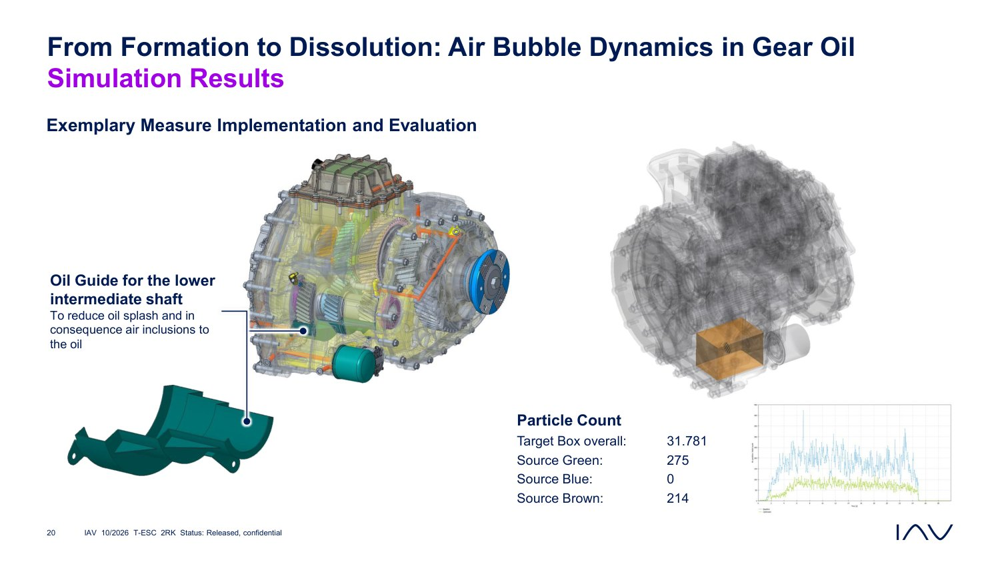
In short
- The coupled MPS/DEM process follows the air bubbles from formation to dissolution in detail.
- The IAV Particle Explorer turns transient particle behavior into countable analytics for each source.
- In this e-transmission one source gave more than half of the air in the target box, and an oil guide cut the total by 62 %.
Gear Lubrication Analysis, and Its Expansion to R&D on Airflow Effects
Univance checks its oil splash in the design phase, and now at a scale of 110 million particles: a chain case 262 times the size of an earlier one, and a gear studied with oil and air as particles.
Univance is a Japanese drivetrain supplier, founded in 1937, with about 2,000 employees and products from transmissions and 4WD units to electric powertrain parts. CAE starts early in its V-model development, and Particleworks is mainly used in the design phase. The reasons given: lubrication reduces friction and wear and removes heat, physical tests show little of the oil flow inside a gearbox, and a late issue can mean a costly redesign.
Two earlier cases show the routine use. A gear oil splash (200 rpm, 15 s, 800,000 particles of 3 mm, 12 hours on four K40 GPUs) was evaluated more than ten times in design before release, and its oil flow agreed with the experiment. A transfer-case chain (75 rpm, 3.0 s, 420,000 particles of 0.8 mm, 30 hours) also agreed with the experiment. Both cases shortened development and saved prototypes and tests.
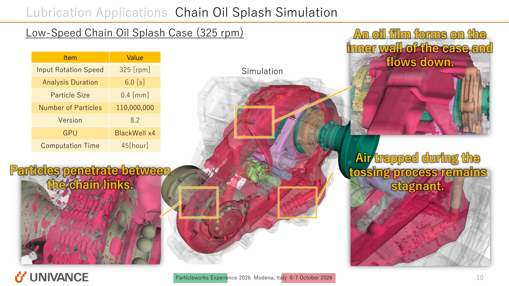
A chain case 262 times bigger
The earlier chain case had 420,000 particles of 0.8 mm and ran 3.0 s in 30 hours on four K40 GPUs. The 2026 case has 110 million particles of 0.4 mm and runs 6.0 s in 45 hours on four Blackwell GPUs. Oil penetrates between the links, a film forms on the inner wall of the case and flows down, and the air trapped during the tossing stays stagnant.
At 6,500 rpm, air matters
The same kind of chain at 6,500 rpm, 0.3 s in 46 hours, with oil and air as separate phases, makes the effect of the airflow on oil distribution and lubrication visible.
Airflow explained what the camera saw
On a test gear pair, Univance dropped oil on the gear and filmed it with a high-speed camera while PIV (particle image velocimetry) measured the air. Oil avoided the rotating gear, slid over the tooth tip, partly stuck to the teeth or was drawn into the mesh. An MPS–FVM coupled simulation reproduced the curved oil trajectory and the upward airflow, and the air velocities in the air curtain agree with the PIV measurements.
Then oil and air as particles
MPS–FVM coupling struggled with thin oil films, full-system models and stability. Univance moved to a gas-liquid two-phase analysis with oil and air as particles: 10,000 rpm, 5.0 s, 0.3 mm for both phases, 84 hours on four Blackwell GPUs in single precision (the coupled run before it: 6,000 rpm, 5.0 s, 0.5 mm, 48 hours on two A100). The splash patterns at 3,000 and 10,000 rpm and the airflow structures were reproduced.
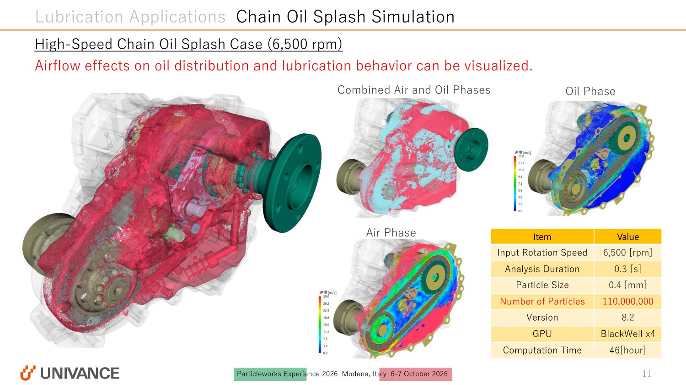
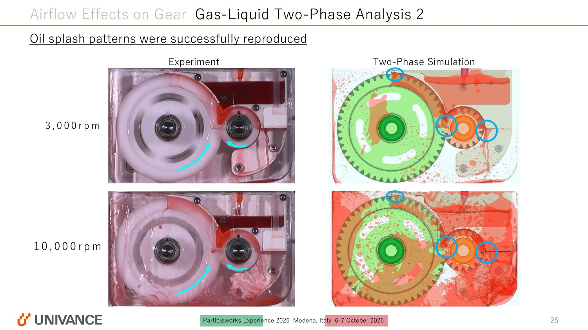
In short
- Particleworks supports design-phase lubrication checks: more than ten evaluations of one gear case before release.
- A chain case grew from 420,000 to 110 million particles on four GPUs: twice the simulated time in 1.5 times the run time.
- Airflow explains the oil behavior seen with a high-speed camera and PIV: curved trajectories and an upward air stream in the mesh.
Where it wears, and what that costs
Two very different machines, one question: can a particle simulation say where the hardware wears and how much performance it loses?
Moving Particle Simulation of Eroded Pelton Runners
Europe’s hydropower is ageing and silting up. HES-SO uses Particleworks to put a number on what sediment erosion costs a Pelton runner in torque.
ReHydro is a Horizon Europe project of 18 partners, coordinated by SINTEF, to refurbish and modernise European hydropower. The fleet is about 50 to 55 years old and now has to balance solar and wind, and as glaciers retreat more sediment reaches the turbines. In the worst plants, after a year of operation a Pelton runner can lose perhaps half a bucket.
A Pelton turbine is an impulse turbine: a water jet hits the buckets and the torque on the shaft is the power. The physics is simple and the machines are huge, so they cannot be tested in a laboratory. Measuring the efficiency of a real runner means stopping production for two or three days, which is why a prediction of the efficiency lost to erosion is worth having.
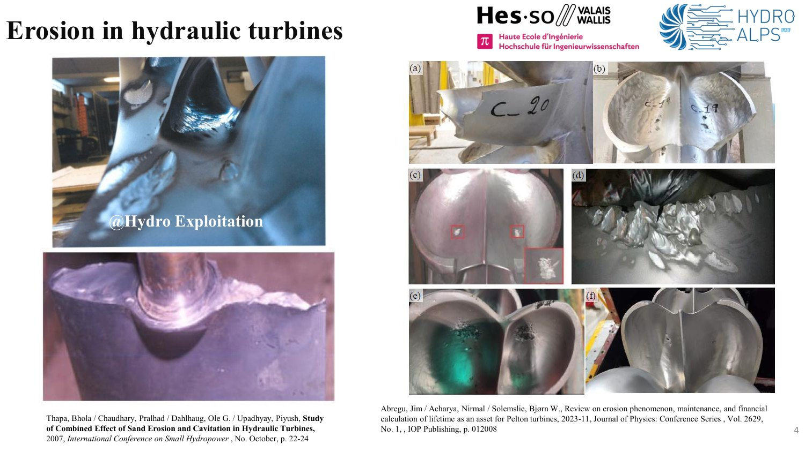
Whole revolutions, not fragments
With Particleworks HES-SO can simulate more than one revolution of the runner on a single GPU, where a finite-volume code takes more than a week. After four years of use that changed what is feasible: several simulations, not one.
Torque converges, and can be extrapolated
For a healthy runner the dimensionless torque rises toward the target as the particles shrink, and a linear extrapolation to zero particle size lands close to it. That means a fast, coarse run can be used to estimate what a very fine one would give.
Artificial erosion follows the known trends
Flat, rounded and cut-out erosion reproduce the analytical and published efficiency drops, more closely with finer particles. A rounded erosion collapses onto a laboratory experiment on another turbine at another scale, which hints that the effect may not depend on runner size. The worn splitter tip is the exception: the particles are as large as the eroded layer.
Real erosion: the loss comes early
Three real runners were computed: new, after three years, after five (when the owner refurbished). The torque decrease is predicted accurately, and mid-life is already close to end-of-life: torque drops of 6 % and 6.6 % for the mid-life and end-of-life runners, most of the efficiency is already gone at stage T2.
In short
- Torque loss is predicted, which lets an owner decide whether to refurbish in February or November.
- Next: partial load, where the drop should be larger, then a runner whose speed responds to load rejection.
- A brick of a digital twin: what does 2 % of efficiency lost to one flood cost over a year?
Simulation of Sand Separation and Wear in the Börger FlowSep
A sand separator for biogas plants, simulated before its second prototype: the model showed where the sand escapes, why more flow is worse, and where the housing wears.
Biogas plants used to be fed with energy crops, a clean medium. Today they run on manure, and with it come sand, stones and soil. In the example shown, 1.9 m of sand settled in 36 months in a 16 m tank: about 1,000 tons. It blocks pipes, defeats the mixers, shrinks the usable volume, blocks the slurry tankers, and is expensive special waste to dig out.
Börger’s BioSelect separator already removes fibres larger than 0.5 mm. The new FlowSep adds centrifugal forces to remove the sand below that size before the final tank. The first mock-up worked immediately; the open questions for the prototype were the geometry, the throughput that still gives an acceptable result, and where the machine wears. EnginSoft built a Particleworks and Granuleworks model, with Börger measuring flows, densities, ash content (burnt at 800 °C) and particle fractions.
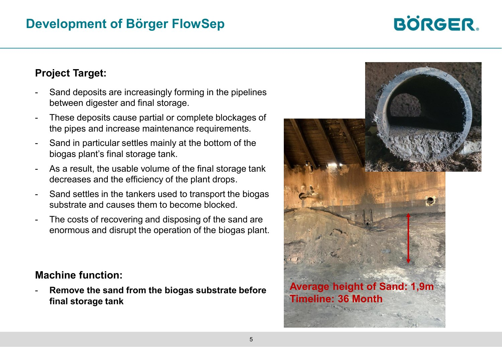
Where the sand escapes
About 10 % of the sand leaves through the clean outlet, close to what the tests showed, and only the small particles: large ones are centrifuged outward, as intended. The model shows the path: particles pushed onto the back plate recirculate, and where two opposed fluxes meet a particle that drifts slightly is sucked out with the water. That points straight at a geometry change.
More flow, less separation
Börger’s first idea was to raise the flow rate. At twice the flow the sand not separated grows from about 10 % to about 25 %, with more of the coarse fraction reaching the clean phase. a slower flow separates better; the alternative is to change the geometry: radius, length, motor size.
Where the housing wears
Wall interaction was read from the particle number density within 1 mm of the wall together with velocity. It flags the area near the blades and the back plate, and the prototype, after about half a year of round-the-clock operation, showed strong erosion exactly there. With version 9 the force on the wall is the more direct indicator.
Fewer prototypes
Each prototype costs a lot, and the simulation says early which change makes sense, widening the radius or lengthening the unit, before steel is cut.
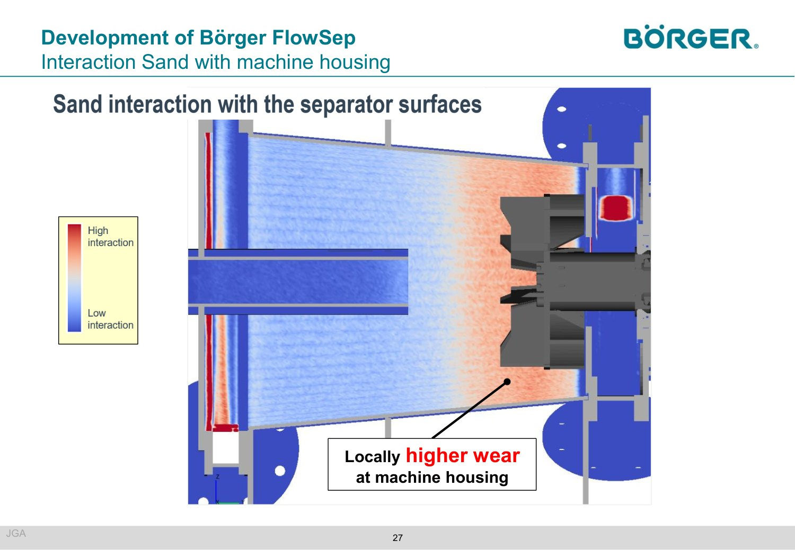
In short
- Of the sand that escapes, the small particles are the problem; the geometry can be changed to catch them.
- Higher flow rate: bad separation 10 % → 25 %.
- Simulated wear zones match the prototype: blades and back plate.
One more talk, slides only
Prometech Software released its slides but not a recording. They are in the proceedings.
- Prometech Software (Issei Masaie and Iori Saigo) presented the Particleworks 9.0 and Granuleworks 4.0 releases. The new features get their own article.
The questions that mattered
What the day showed
Six findings
- Thermal models closed with a steady CHT. Two talks solved oil and metal on separate clocks, in minutes to a day per case, and stated the gap to the bench: about 5–6 °C worst on the pump, up to about 12 % on the roller oil.
- The reading point changes the number. On one sphere the same code returned an HTC of 66 or 169 W/m²K depending on where it was sampled. One air content, 0.65 %, hid bubbles of 132 µm or 68 µm.
- Calibrate on measured bubbles. Optical bubble data took a gearbox aeration model from 0.12 % to 0.45 % air against 0.43 % measured, and from 800 to 186 µm bubbles against 180 µm.
- Simulation also says what not to do. Pelton torque loss and the wear zones of a separator housing were predicted. Doubling the separator flow rate, the obvious fix, raised the sand lost from 10 % to 25 %.
- Trace the air to where it starts. IAV counted every air particle by its source in an e-drivetrain: 46,704 of the 83,187 in the target box began at one wall, and an oil guide there cut the box to 31,781.
- Oil and air in one run. Univance simulated a chain at 110 million particles and a gear at 10,000 rpm with oil and air as particles, and matched the splash patterns it saw on the bench.
No talk claimed a perfect match. The useful part was the stated gap: about 5–6 °C at worst on the pump, about 12 % on the roller oil, a factor of 2.5 on a sphere depending on where the HTC was read.
Get the Modena proceedings
Slides, recordings and key findings of each released talk. Free, after a short form.
Get the proceedings